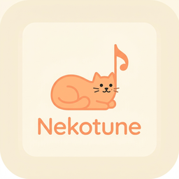
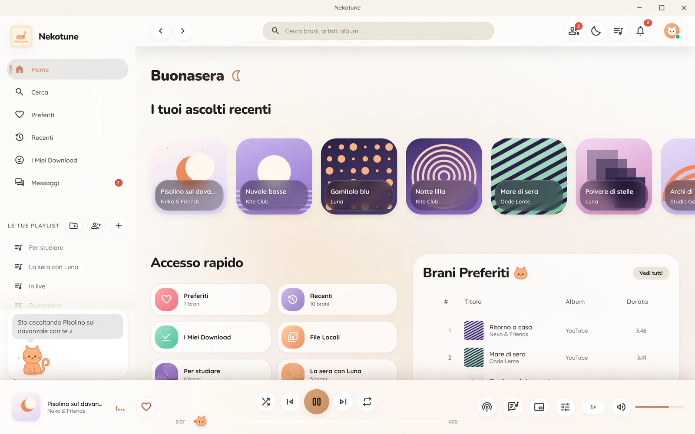
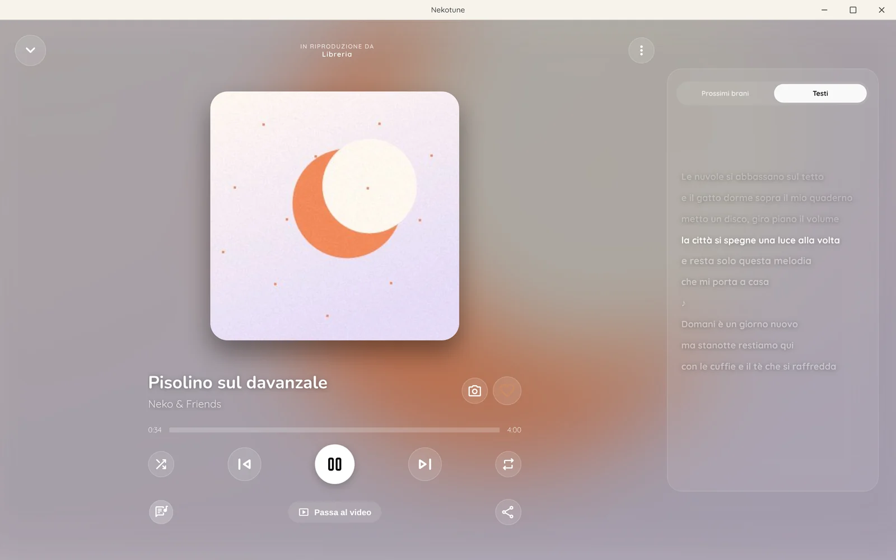
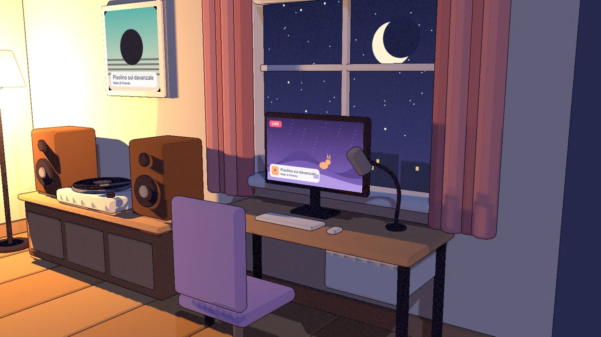
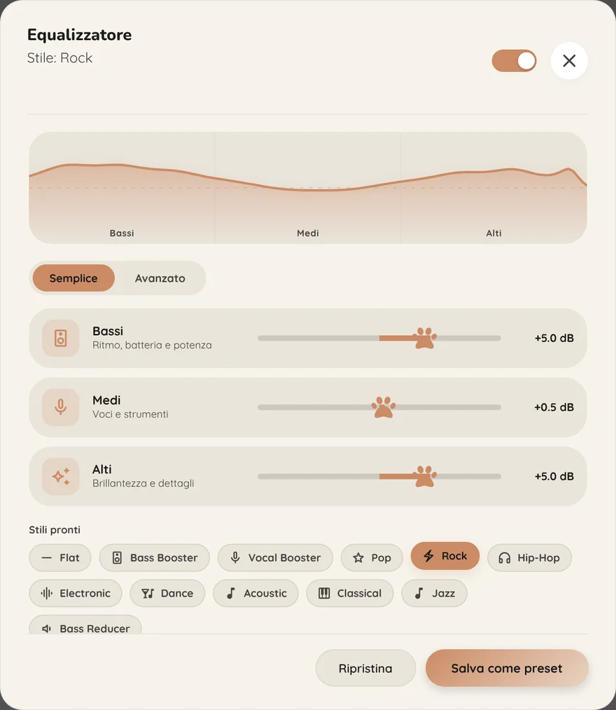
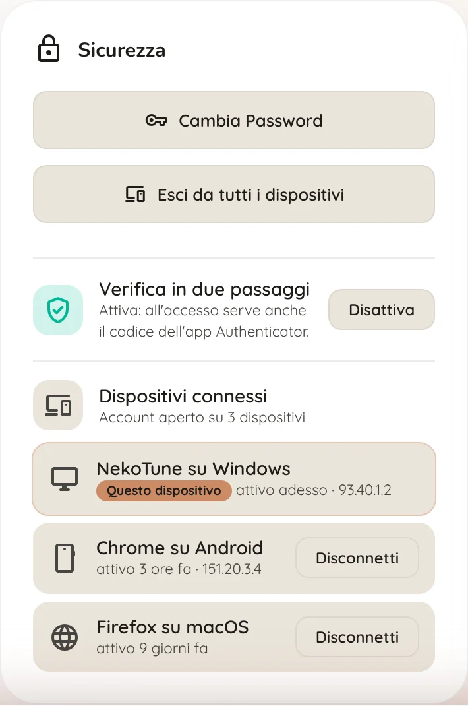
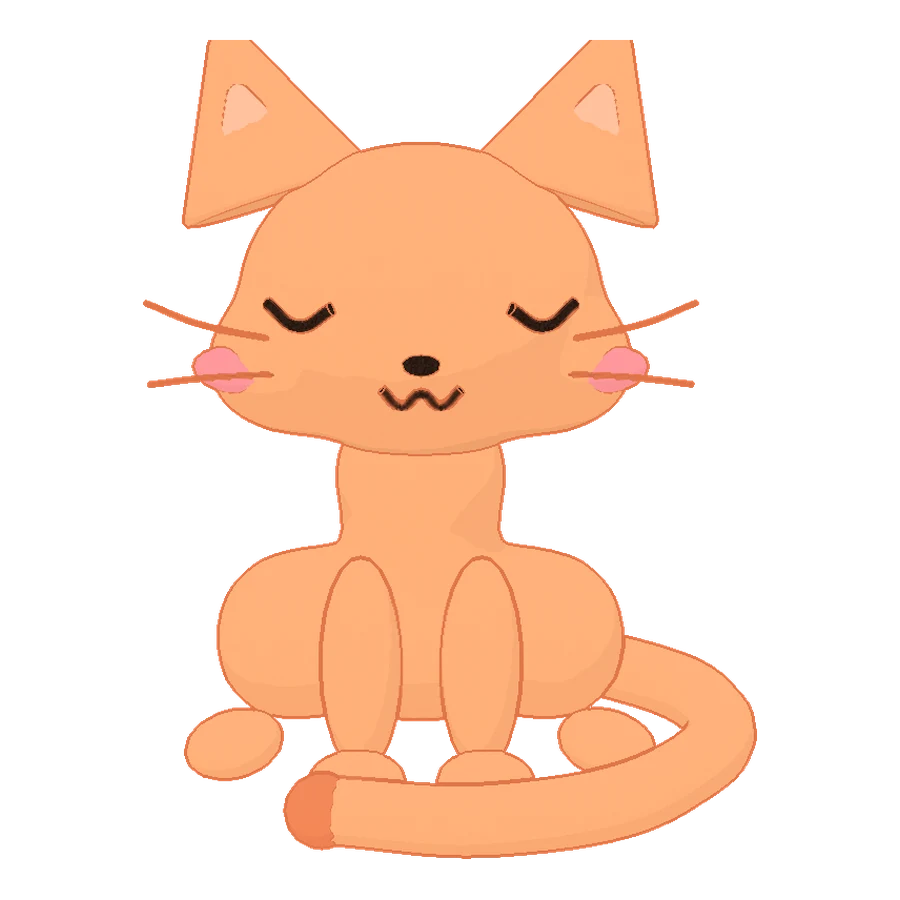

NekoTune
0 €
- Tutta la musica, offline compreso
- Amici, messaggi e sessioni di gruppo
- Sei temi pronti
- Equalizzatore, testi e mini player
- Qualche annuncio discreto nella Home


NekoTuneDa Neko è pomeriggio, --:--
ScaricaNekoTune è un lettore musicale gratuito per Windows. Cerchi un brano, lo ascolti, lo salvi offline e lo condividi con gli amici.
Pisolino sul davanzale
Neko & Friends
Neko dorme. Premi play.
Nella stanza puoi toccare quasi tutto. Prova la finestra, o lancia il gomitolo a Luna.
Premi play. Il resto lo fa lui.
A tutto schermo, quando il brano lo merita.
I testi seguono la voce.





Scegli un tema: NekoTune cambia colore con lo stesso cerchio che vedi nell'app.


ehi, sei ancora sveglio?
in loop da stamattina
arrivo! metto le cuffie
/nekotune now il tuo server vede cosa stai ascoltando.

L'equalizzatore parla come te: bassi, medi e alti, e una curva che ti fa vedere cosa cambia.
La Home propone brani nuovi simili a quelli che ascolti, non quelli che hai già.
Trascini i brani dove vuoi, e raccogli le playlist in cartelle.
Le parole si illuminano mentre il brano va avanti.
Una finestrella sempre in primo piano mentre lavori o giochi.
Salvi i brani e li ascolti anche senza internet, o li scarichi sul PC.
Con l'account, playlist e preferiti ti seguono su ogni computer.

Tutto quello che serve per ascoltare è gratis. Plus aggiunge qualcosa in più e aiuta NekoTune a crescere.
0 €
5 € al mese
Si attiva da solo sul tuo account. Disdici quando vuoi; rimborso entro 14 giorni dal primo pagamento. Termini

NekoTune è gratis, per Windows 10 e 11. Le altre versioni sono nella pagina delle versioni.
L'account serve solo per amici, messaggi, sessioni e backup delle playlist.
Sì: ascoltare, salvare offline, amici, sessioni e temi pronti sono gratis. NekoTune Plus (5 € al mese, facoltativo) aggiunge i temi personalizzati e toglie gli annunci.
Nell'app apri il menu del profilo, poi NekoTune Plus, e abbonati su Ko-fi con la stessa email del tuo account (oppure scrivi nel messaggio il codice che ti dà l'app). Plus si attiva da solo in pochi secondi. Lo disdici quando vuoi da Ko-fi.
Dal catalogo pubblico di YouTube e YouTube Music. NekoTune non ospita brani: li cerca e li riproduce per te.
Per ascoltare no. Serve per aggiungere amici, scrivere messaggi, fare sessioni di gruppo e tenere un backup di playlist e preferiti tra più computer.
Sì, con i brani che hai salvato offline nell'app o scaricato sul PC.
Per ora NekoTune è per computer.
Segue l'ora del tuo computer: di giorno è pomeriggio, la sera si accendono la lampada e le lucine. Toccando la finestra la cambi tu.
No: i tre brani del lettore di prova li suona il browser mentre li ascolti, accordo per accordo. Le copertine, i brani e gli amici che vedi nelle schermate e nei video dell'app sono inventati.